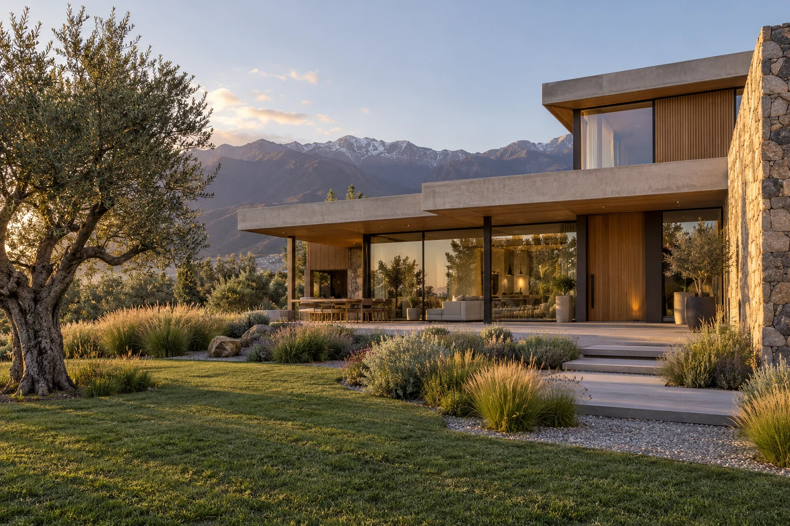

01 / RELEVAMIENTO↗
Relevamiento de construcciones
Relevamos lo construido para identificar la situación de tu inmueble y sus superficies no declaradas.
Relevamos construcciones no declaradas al municipio y te acompañamos para ordenar la situación de tu propiedad.
Asesoramiento sin cargo ↗
Arquitectura ilustrativa. No corresponde a una obra del equipo.
¿Ampliaste tu vivienda o tenés construcciones que no figuran en la documentación municipal? El primer paso es conocer tu situación y entender cómo avanzar.
Relevamos lo construido para identificar la situación de tu inmueble y sus superficies no declaradas.
Te orientamos sobre el trámite que corresponde y la documentación necesaria para avanzar.
Contacto directo con los profesionales, información permanente y asesoramiento sin cargo.
Consultanos por las posibilidades de regularización de tu propiedad. Te ayudamos a entender los requisitos y cómo iniciar tu relevamiento.
Consultar mi caso ↗La vigencia, los beneficios y los requisitos de la moratoria dependen de la normativa municipal aplicable. Consultá las condiciones para tu inmueble.
Trámites rápidos, información permanente al propietario y asesoramiento sin cargo.
Nos contactás y nos contás dónde está la propiedad y qué construcciones necesitás declarar.
Evaluamos tu caso y coordinamos los pasos necesarios para relevar lo construido.
Te explicamos los requisitos y mantenemos el contacto para que conozcas la situación de tu trámite. Los tiempos dependen de cada caso y del municipio.
Un ingeniero y un maestro mayor de obras para acompañarte con atención cercana y una comunicación clara.
Si tenés una construcción o ampliación que no figura en la documentación municipal, consultanos. Podemos orientarte sobre cómo revisar tu situación.
La ubicación de la propiedad, una breve descripción de lo construido y, si la tenés, documentación o planos anteriores. Si no contás con ellos, podés consultar igualmente.
El asesoramiento es sin cargo. El alcance y el costo de los trabajos de relevamiento se conversan según tu caso.
Los plazos varían según la propiedad, la documentación disponible y la gestión municipal. Te orientamos sobre tu caso y te mantenemos informado.
Depende de las condiciones y la vigencia que establezca el municipio. Escribinos para revisar tu situación antes de iniciar el trámite.
Completá los datos para preparar tu consulta por WhatsApp o escribile directamente a uno de los profesionales.